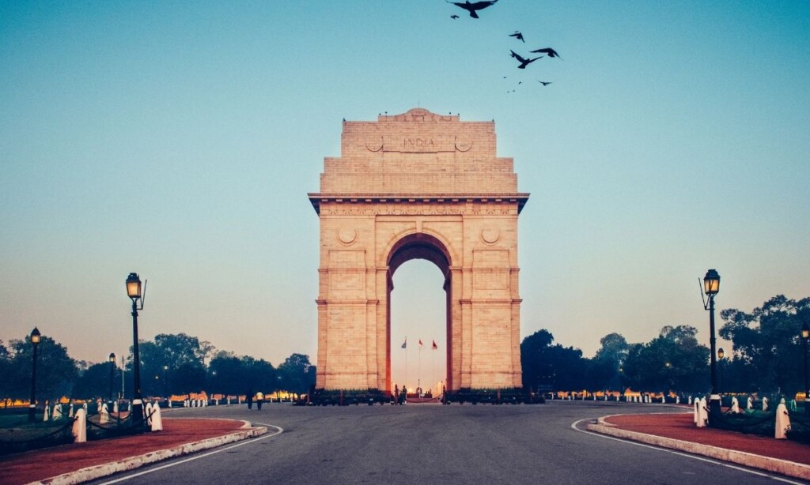
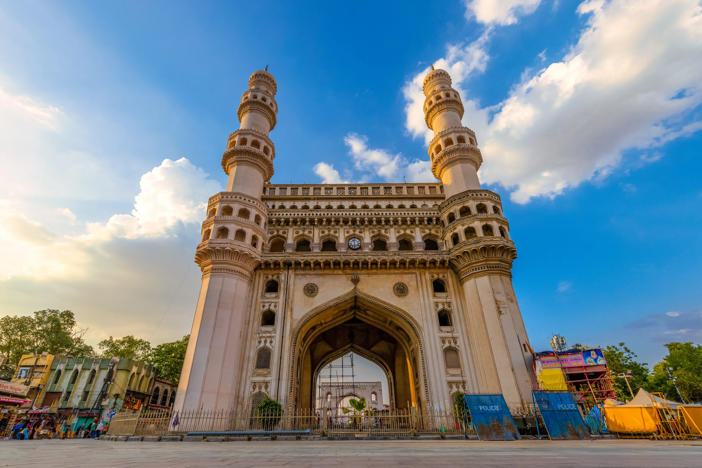
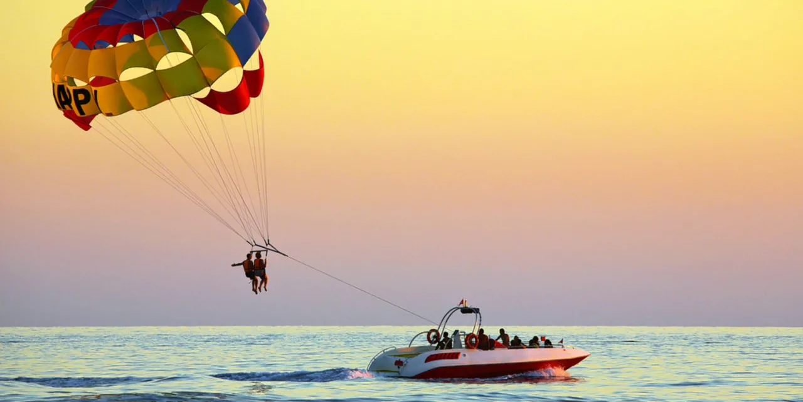
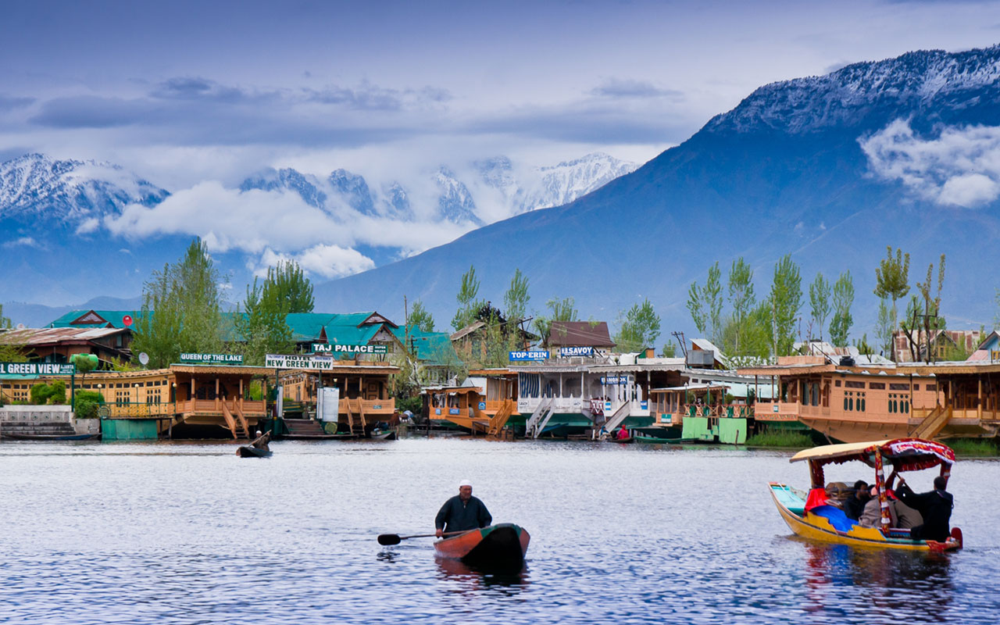
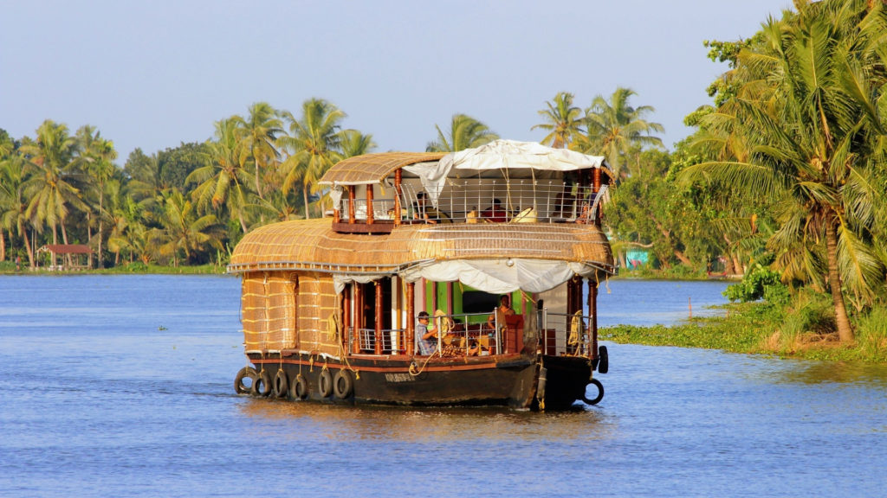
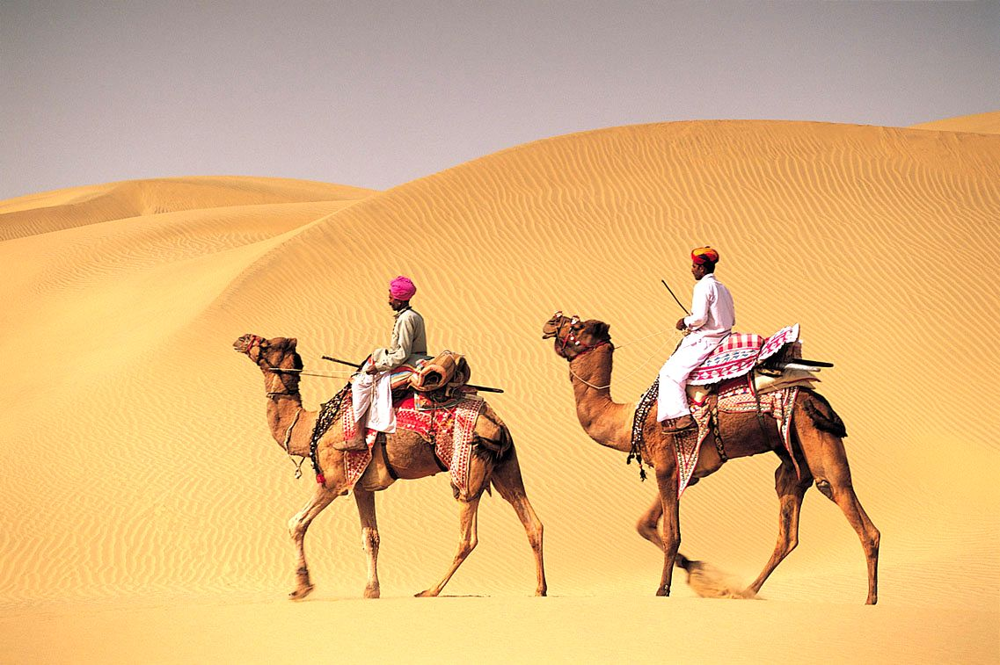

Vacations are not only about exciting activities, thrill or adventure. Many times, a holiday is simply an opportunity to forget your stress and just relax. For getting that kind of relaxation, all that you need is tranquil surroundings, scrumptious food, and friendly atmosphere. Needless to say, it is an easy task to find enthusiasm and adventure at most of the tourist destinations.
Places to Visit
But for holidaying that encourages relaxation, you need to identify such holiday destinations in India that allow you enjoying holidays at ease. If you are looking for a perfect relaxing holiday and wondering where to go, checkout best places to visit in India.






Our Packages
A package tour, package vacation, or package holiday comprises transport and accommodation advertised and sold together by a vendor known as a tour operator. Other services may be provided such as a rental car, activities or outings during the holiday. Transport can be via automobile, buses, charter airline, and may also include travel between areas as part of the holiday. Package holidays are a form of product bundling.
DelhiDelhi Tourism, a government undertaking facilitating tourism since 1975 will take you to a guided tour of the Delhi through this website which explores the wonders of this city be it its heritage, the art and crafts, the diverse cuisine and culture. ₹ 30,000HyderabadHyderabad is the capital of southern India's Telangana state. A major center for the technology industry, it's home to many upscale restaurants and shops. Its historic sites include Golconda Fort, a former diamond-trading center that was once the Qutb Shahi dynastic capital. The Charminar, 16th-century mosque whose 4 arches support towering minarets, is an old city landmark near the long-standing Laad Bazaar. ₹ 10,000GoaGoa is a state in western India with coastlines stretching along the Arabian Sea. Its long history a Portuguese colony prior to 1961 is evident in its preserved 17th-century churches and the area’s tropical spice plantations. Goa is also known for its beaches, ranging from popular stretches at Baga and Palolem to those in laid-back fishing villages such as Agonda. ₹ 20,000
JammuJammu is justly famous for its temples. In fact it is known as the city of temples and the every fame of its tends to overshadow its palaces, forts, forests and powerful ziarats. ₹ 50,000KeralaNamed as one of the ten paradises of the world by National Geographic Traveler, Kerala is famous especially for its ecotourism initiatives and beautiful backwaters. Its unique culture and traditions, coupled with its varied demography, have made Kerala one of the most popular tourist destinations in the world. ₹ 30,000RajasthanRajasthan attracts tourists for its historical forts, palaces, art and culture with its slogan "Padharo Mhare Desh". Jaipur, also known as Pink City, is a very popular tourist destination, being the capital of Rajasthan and a part of the Golden Triangle. ₹ 40,000